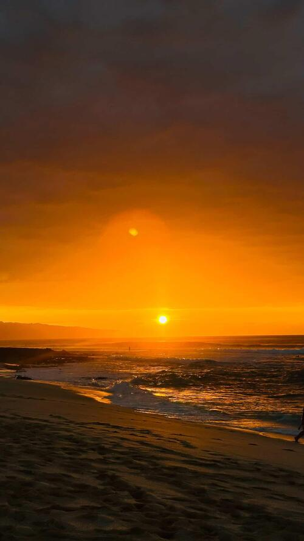

The sunsets in Hawaii have a way of taking your breath away. Sitting on a cliff or on the beach, you watch as the sky turns into a kaleidoscope of color and seems almost too vivid to be real. The golden light plays across the palm trees and the surf in a way that is both alive and electric and feels exhilarating and real. In the moments just before the sun dips below the horizon, there is a joy in your chest that is unmistakable – a blissful feeling that can only come from a Hawaiian sunset.
As the sun begins its descent into the horizon in Hawaii, the sky is set ablaze with shades of orange, pink, and purple. Standing on the sandy beach, you experience a thrill of wonder and magic as if the world is holding its breath in anticipation of this moment. Every wave that comes ashore has its own hue of color, making every moment distinct and unique. Watching the sunset is not just sightseeing; it is a full-hearted celebration of the beauty of nature. The warmth of the atmosphere and the hum of the ocean create an almost euphoric experience for you as you become completely enchanted by the beauty of the scene.